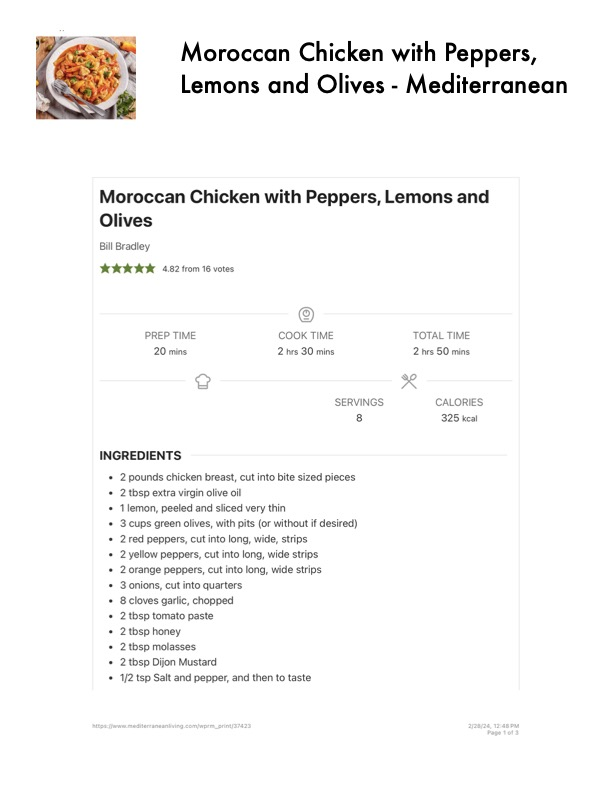

Moroccan Chicken with Peppers,

Original cookbook page 546
Ingredients
- 20 mins 2 hrs 30 mins 2 hrs 50 mins
- 8 325 kcal
- 2 pounds chicken breast, cut into bite sized pieces
- 2 tbsp extra virgin olive oil
- 1lemon, peeled and sliced very thin
- 3cups green olives, with pits (or without if desired)
- 2red peppers, cut into long, wide, strips
- 2 yellow peppers, cut into long, wide strips
- 2 orange peppers, cut into long, wide strips
- 3 onions, cut into quarters
- 8cloves garlic, chopped
- 2 tbsp tomato paste
- 2 tbsp honey
- 2 tbsp molasses
- 2 tbsp Dijon Mustard
- 1/2 tsp Salt and pepper, and then to taste
- Page 1 of 3
Instructions
- PREP TIME COOK TIME TOTAL TIME 20 mins 2 hrs 30 mins 2 hrs 50 mins f.
- 2 pounds chicken breast, cut into bite sized pieces e 2 tbsp extra virgin olive oil
- 1lemon, peeled and sliced very thin
- 3cups green olives, with pits (or without if desired) e 2red peppers, cut into long, wide, strips
- 2 yellow peppers, cut into long, wide strips
- 2 orange peppers, cut into long, wide strips
Recipe #546 from collection